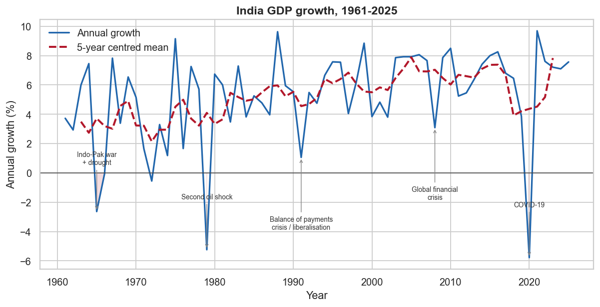
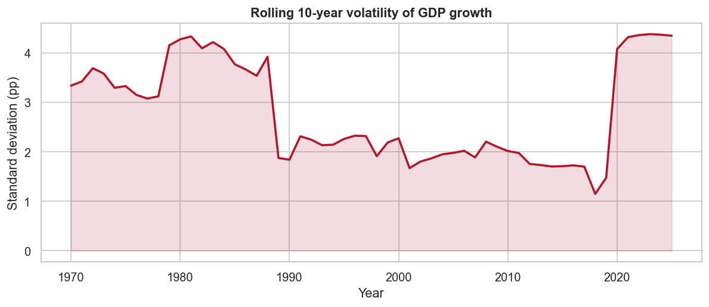
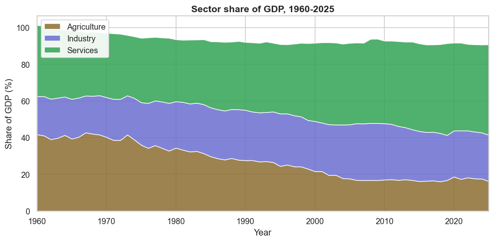
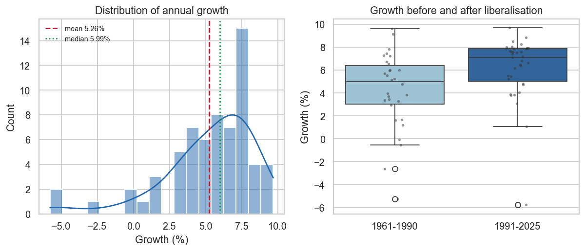
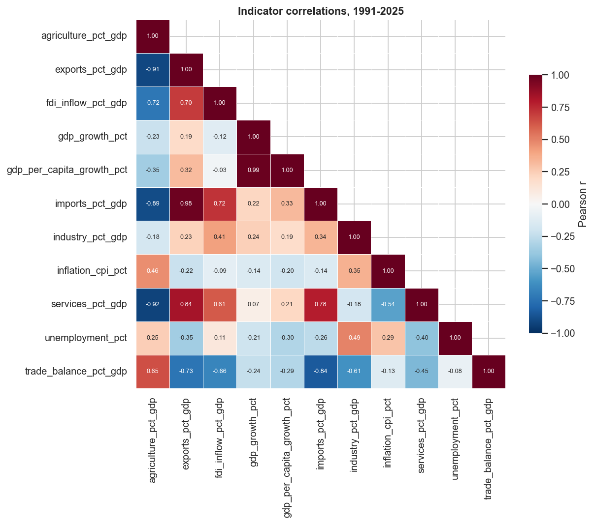

India Economic Indicators & Forecasting
An end-to-end pipeline pulling 11 World Bank indicators live from the API, 1960–2025, then a walk-forward forecasting study of annual GDP growth. No machine learning model beat predicting the long-run average — and the exploratory analysis called that outcome before a single model was fitted.
The brief
What has driven India's growth, and can next year's be forecast?
Two questions, one dataset. The first is descriptive: what changed structurally in the Indian economy between 1960 and 2025. The second is predictive: given eleven published macro indicators, can annual GDP growth be forecast one year ahead?
The descriptive half produced four findings. The predictive half produced a negative result — and that negative result is the more useful output, because it is accompanied by a specific, measurable reason.
Pipeline
Live API ingest through to dashboard
| Stage | Script | Output |
|---|---|---|
| Ingest | src/extract.py | Raw JSON per indicator, pulled live from the World Bank API and retained |
| Clean | src/transform.py | Tidy panel + automated data quality report |
| Explore | src/eda.py | 5 figures + EDA findings |
| Model | src/forecast.py | Walk-forward scoreboard, 5 models × 2 feature sets |
| SQL | src/load_db.py, src/run_sql.py | SQLite database + 8 analysis queries |
| Dashboard | dashboard/app.py | Interactive Streamlit app |
Raw JSON is kept rather than discarded after parsing, so any number in the report traces back to the exact API response it came from. The suite of 13 tests includes explicit data-leakage checks confirming every lagged feature is shifted by at least one year — the failure mode that makes a forecasting model look excellent and be worthless.
Structural findings
1 Liberalisation changed the level of growth and its reliability


| Era | Years | Mean growth | Volatility (sd) |
|---|---|---|---|
| 1961 – 1990 | 30 | 4.23% | 3.36 |
| 1991 – 2025 | 35 | 6.14% | 2.80 |
Growth after 1991 is 1.91 percentage points higher on average. The part usually left out is that it is also less volatile — standard deviation falls from 3.36 to 2.80. The pre-liberalisation economy did not merely grow more slowly; it grew less predictably.
At decade resolution the contrast is starker. The 1970s averaged 2.93% growth with volatility of 3.94; the 2010s averaged 6.64% with volatility of 1.40. Measured as growth per unit of risk, that is 4.74 against 0.74 — a sixfold improvement in the stability of growth, not just its rate.
2 India moved from agriculture to services, skipping industry

| Decade | Agriculture | Industry | Services |
|---|---|---|---|
| 1960s | 40.9% | 21.2% | 36.9% |
| 1990s | 25.7% | 27.3% | 38.5% |
| 2020s | 17.6% | 25.5% | 48.0% |
Agriculture's share fell by 23 percentage points across the period, and almost all of it moved to services. The industry share is essentially flat over 60 years.
This inverts the path most industrialising economies took, where manufacturing absorbs labour leaving agriculture before services expand. It matters because services growth absorbs far fewer low-skilled workers per unit of output than manufacturing does — so the same headline GDP growth translates into materially less employment for the workers actually leaving agriculture.
3 Trade openness tracks higher growth
| Openness (exports + imports, % of GDP) | Years | Avg growth |
|---|---|---|
| Under 30% | 12 | 5.39% |
| 30 – 45% | 9 | 5.70% |
| Over 45% | 14 | 7.06% |
The most open third grew 1.67 percentage points faster than the least open third, and the pattern is monotonic.
The direction of causation is not established here, and the confound is obvious: openness rises when global demand is strong, and strong global demand lifts Indian growth directly. Part of this gap is common cause rather than effect. The association is worth reporting; a causal claim would need an instrument this dataset does not contain.
4 Inflation shows no clean relationship with growth
| Inflation band | Years | Avg growth |
|---|---|---|
| Low (under 5%) | 22 | 5.67% |
| Moderate (5 – 10%) | 27 | 4.72% |
| High (10%+) | 16 | 5.59% |
There is no monotonic pattern, and high-inflation years averaged higher growth than moderate-inflation ones. The correlation between the two series across 1991–2025 is −0.14, which is negligible.
This is a negative result and it is reported as one. The intuition that inflation and growth trade off cleanly does not survive contact with 65 years of Indian annual data.
The forecasting result
Five models, two feature sets, walk-forward validation
Models were validated walk-forward: train on every year up to t−1, predict year t, step forward, repeat. Every feature is lagged by at least one year, so no model ever sees information that would not have been available at forecast time.
| Feature set | Model | RMSE | MAE |
|---|---|---|---|
| Univariate | Mean (baseline) | 2.97 | 2.30 |
| Univariate | Ridge | 3.19 | 2.51 |
| Univariate | Random Forest | 3.28 | 2.59 |
| Univariate | Gradient Boosting | 3.54 | 2.67 |
| Univariate | Naive (baseline) | 3.70 | 2.31 |
| Multivariate | Mean (baseline) | 3.91 | 2.30 |
| Multivariate | Random Forest | 4.03 | 2.59 |
| Multivariate | Ridge | 7.42 | 5.45 |
Predicting "growth will be about 6%" every single year beats every machine learning model tried, on both feature sets. Adding ten macro indicators made forecasts worse, not better — every multivariate model is less accurate than its univariate counterpart, and multivariate Ridge at RMSE 7.42 is worse than guessing.
Why it failed — and why that is the finding
A model losing to a baseline is only interesting if you can say why. Three reasons, all properties of the data rather than of the models:
1 Growth is stationary white noise around a constant mean

This is the single most important number in the project. An Augmented Dickey-Fuller test rejects non-stationarity decisively (statistic −7.65, p < 0.0001), and the lag-1 autocorrelation is 0.026 — effectively zero.
Last year's growth carries almost no information about this year's. That single fact dooms the entire modelling approach: lag features cannot work when there is no serial dependence for them to capture. It also explains the shape of the scoreboard — shocks like 1965, 1979 and 2020 are severe but do not persist, which is exactly why the naive carry-forward forecast is the worst baseline while the mean is the best.
2 The sample is far too small for the models used
The univariate setup has 62 usable years; the multivariate one has 32. Tree ensembles need far more than that to learn stable structure, and Ridge fitting 31 features across 32 observations is fitting noise almost by definition — which is precisely what its RMSE of 7.42 reflects.
3 The predictors are weak before they are even lagged

The strongest same-year correlation with growth across 1991–2025 is −0.24 (trade balance). Lagging these variables, as honest forecasting requires, weakens them further. There was never much signal to extract.
The exploratory analysis reached this conclusion before any model was fitted — the stationarity test and autocorrelation check are in section 10 of the EDA notebook. The modelling step confirmed a prediction the data had already made.
Reporting a machine learning model as the winner here would have required either dropping the baseline from the comparison or using unlagged features. Both are common, both produce a better-looking scoreboard, and both are misleading.
The SQL layer
8 analysis queries over a SQLite build of the panel
The cleaned panel is loaded into SQLite as indicators(year, indicator, value) with a companion indicator_meta table. The queries are standard SQL and run unchanged on PostgreSQL and MySQL 8+.
Decade volatility is the one worth showing, because SQLite has no STDDEV — so it is computed from the definition, and the same expression is reused to derive growth per unit of risk:
-- Q2. Growth volatility by decade -- Average growth alone hides risk. SQLite has no STDDEV, so it is computed -- from the definition: sqrt(E[x^2] - E[x]^2). SELECT (year / 10) * 10 AS decade, ROUND(AVG(value), 2) AS avg_growth_pct, ROUND(SQRT(AVG(value * value) - AVG(value) * AVG(value)), 2) AS volatility, ROUND( AVG(value) / NULLIF(SQRT(AVG(value * value) - AVG(value) * AVG(value)), 0), 2 ) AS growth_per_unit_risk FROM indicators WHERE indicator = 'gdp_growth_pct' GROUP BY decade ORDER BY decade;
That query is what produces the 1970s figure of 0.74 against the 2010s' 4.74 quoted in finding 1.
Isolating the years where growth itself moved sharply uses LAG, ordered by the absolute size of the move rather than by year:
-- Q3. Year-on-year change in growth, using a window function -- Isolates the years where the growth rate itself moved sharply. WITH growth AS ( SELECT year, value AS growth_pct, LAG(value) OVER (ORDER BY year) AS prev_growth_pct FROM indicators WHERE indicator = 'gdp_growth_pct' ) SELECT year, ROUND(growth_pct, 2) AS growth_pct, ROUND(growth_pct - prev_growth_pct, 2) AS change_vs_prev_year FROM growth WHERE prev_growth_pct IS NOT NULL ORDER BY ABS(growth_pct - prev_growth_pct) DESC LIMIT 10;
The shocks it surfaces — 1965, 1979, 2020 — are the same ones that make the naive carry-forward baseline the worst performer in the scoreboard, since none of them persist into the following year.
Recommendations
What would actually improve the forecast
- Quarterly data instead of annual would roughly quadruple the sample and give the models something to learn from.
- Genuine leading indicators — PMI, index of industrial production, credit growth, monsoon rainfall. These carry signal that annual national accounts, which are themselves a summary of the year being predicted, do not.
- Until then, use the mean. For one-year-ahead annual GDP growth from published macro aggregates, the long-run average is the defensible forecast, and it should be the benchmark any future model has to beat.
- Always report the baseline. Every scoreboard in this project includes both a mean and a naive baseline. Without them, univariate Ridge at RMSE 3.19 looks like a working model.
Neither of the first two is available from the World Bank API, which is the honest boundary of what this project could do.
Limitations
- Annual frequency, small sample. 65 observations is enough to describe trends and thin for modelling. This is why baselines are reported alongside every model rather than as an afterthought.
- Definitional breaks. India rebased its GDP series to 2011–12 prices; long-run comparisons cross that break and are affected by it.
- Provisional recent years. The most recent value is an estimate and gets revised in later releases.
- Association, not causation. Every relationship reported here is correlational. Nothing in this dataset supports a causal claim — the trade openness finding is the clearest case, where reverse causation and common cause are both plausible.